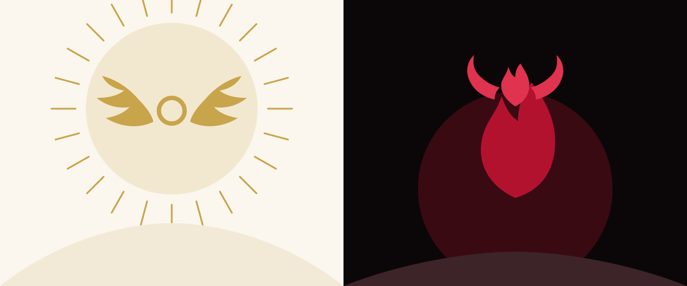

Component
Hero
The opening of a page: a heading at the largest size, a paragraph, one or two buttons, and beside them whatever the template leads with. Every template has its own hero form; this page shows Allegory's, then two variants that move.
Preview
The hero as the overview uses it. The heading takes --font-size-hero; the paragraph is muted and capped at a readable measure.
Two faces of one site
By day an angel's page. By night a devil's.
The ascent
Ivory, an antique gold, white type on gold bands, wings around a halo, and a soft light from above.
Read the ascentThe descent
Black, a red that reads on black, black type on red bands, horns around a flame, and hard shadows from below.
Read the descentThe toggle in the top corner chooses which face the rest of the page wears; every colour is a light-dark() pair, so the swap is complete. The two panels above are pinned, one to each face, with two classes.
<section class="hero allegory-split">
<div class="stack">
<p class="kicker">Two faces of one site</p>
<h1>By day an angel's page. By night <em>a devil's.</em></h1>
</div>
<div class="allegory-diptych">
<section class="allegory-halo">
<h2 class="allegory-band">The ascent</h2>
<p>Ivory, an antique gold, white type on gold bands, wings around a halo, and a soft light from above.</p>
<a class="btn allegory-vow" href="../../example/ascent.html">Read the ascent</a>
</section>
<section class="allegory-horn">
<h2 class="allegory-band">The descent</h2>
<p>Black, a red that reads on black, black type on red bands, horns around a flame, and hard shadows from below.</p>
<a class="btn allegory-vow" href="../../example/descent.html">Read the descent</a>
</section>
</div>
<div class="row">
<p>The toggle in the top corner chooses which face the rest of the page wears; every colour is a <code>light-dark()</code> pair, so the swap is complete. The two panels above are pinned, one to each face, with <a href="flare.html">two classes</a>.</p>
<a class="btn btn-primary btn-lg" href="../index.html">Get started</a>
</div>
</section>Variants
Text only
The same hero with nothing beside the words. Add hero-text: the grid becomes one column and the stack is capped at a readable measure. Every template carries this variant with the same class.
Words only
A hero with nothing beside it.
One column, the text measure capped so the lines stay readable, and everything else the hero has: the kicker, the heading at the hero size, the paragraph, the buttons.
<section class="hero hero-text">
<div class="stack">
<p class="kicker">Words only</p>
<h1>A hero with nothing beside it.</h1>
<p>One column, the text measure capped so the lines stay readable, and everything else the hero has: the kicker, the heading at the hero size, the paragraph, the buttons.</p>
<div class="row">
<a class="btn btn-primary btn-lg" href="../index.html">Get started</a>
<a class="btn btn-lg" href="index.html">Browse components</a>
</div>
</div>
</section>Image only
A hero that is one picture, edge to edge, cropped to a wide band. Add hero-image and give it a single <img> (or a <figure>) with a real alt, since there is no heading to say what it is. Every template carries this variant with the same class.

<section class="hero hero-image">
<img src="../../assets/hero.svg" alt="The template's hero picture, filling the width" width="1200" height="500">
</section>The radiance
The hero is framed in a doubled band-colour border with a hairline set outside it and a small diamond at two corners, and a light pulses through the frame: it swells outward over three seconds, brightening the heading with it, and settles. In the light scheme the frame and the light are gold; in the dark, red, because both are the one band token. Add allegory-radiant to the hero; the global prefers-reduced-motion rule stops it.
Two faces, one light
Lit from within, either way.
The ascent
By day the border is antique gold, doubled, with a hairline set outside it, and the light that pulses through it is gold.
Read the ascentThe descent
By night the same border is red, and the pulse is red. One rule, one token, two faces.
Read the descent<section class="hero allegory-split allegory-radiant">
<div class="stack">
<p class="kicker">Two faces, one light</p>
<h1>Lit from within, <em>either way.</em></h1>
</div>
<div class="allegory-diptych">
<section class="allegory-halo">
<h2 class="allegory-band">The ascent</h2>
<p>By day the border is antique gold, doubled, with a hairline set outside it, and the light that pulses through it is gold.</p>
<a class="btn allegory-vow" href="../../example/ascent.html">Read the ascent</a>
</section>
<section class="allegory-horn">
<h2 class="allegory-band">The descent</h2>
<p>By night the same border is red, and the pulse is red. One rule, one token, two faces.</p>
<a class="btn allegory-vow" href="../../example/descent.html">Read the descent</a>
</section>
</div>
</section>The tide
The two faces rise and fall against each other: the ascent drifts up as the descent sinks, then they trade, on a slow ten-second swell. The radiance above the halo and the flame below the horn brighten as each face reaches its height. Add allegory-tide to the hero; the global prefers-reduced-motion rule stops it.
Two faces, one tide
One rises as the other falls.
The ascent
Drifts up a little and brightens, then gives way.
Read the ascentThe descent
Sinks as the other rises, and glows when it is low.
Read the descent<section class="hero allegory-split allegory-tide">
<div class="stack">
<p class="kicker">Two faces, one tide</p>
<h1>One rises as <em>the other falls.</em></h1>
</div>
<div class="allegory-diptych">
<section class="allegory-halo">
<h2 class="allegory-band">The ascent</h2>
<p>Drifts up a little and brightens, then gives way.</p>
<a class="btn allegory-vow" href="../../example/ascent.html">Read the ascent</a>
</section>
<section class="allegory-horn">
<h2 class="allegory-band">The descent</h2>
<p>Sinks as the other rises, and glows when it is low.</p>
<a class="btn allegory-vow" href="../../example/descent.html">Read the descent</a>
</section>
</div>
</section>Classes
The rules live in css/global.css: the hero under /* == utilities == */ with the other layout helpers, the variant under /* == hero variants == */.
| Class | Purpose |
|---|---|
.hero | The opening section: a grid of a text stack and, in most templates, a picture or a piece of flare |
.hero .stack | The kicker, heading, paragraph and button row |
.hero .row | The buttons |
.hero.allegory-split.allegory-tide | The faces of the diptych rise and fall against each other |
.hero.allegory-split.allegory-radiant | The framed hero with a pulsing light in the band colour: gold by day, red by night |
.hero.hero-text | Words only: one column, capped measure (every template) |
.hero.hero-image | Picture only: one image edge to edge, cropped 21:9 (every template) |
Notes
- One
<h1>per page: the hero's heading is it. The kicker above it is a<p>, not a heading. - Above
48remthe hero is two columns, text then picture; below, it stacks. The variant keeps whatever layout its markup implies. - The variant is CSS only. Its animation is declared with
bothfill, so the page is correct before it starts and after it ends, and the globalprefers-reduced-motionrule stops it. - Another template ignores
allegory-turnand shows its own hero; any flare markup inside sits in the template's flare wrapper so a swap can drop it.